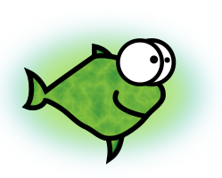

The 10th Muse: “Athena Gets Laid”
About this screenplay
Objective
[ Spec.
In the modern day Greek Pantheon, Athena is still the goddess of wisdom, chivalrous warfare, and a notoriously chaste one.
She accepts a bet with Dionysus that she will remain in control after getting drunk. She loses more than just the bet…
Having kissed a man (later revealed to be Wil Wheaton), she finds out that her only parent, Zeus, first thinks she was joking after confessing that to him. ]
Wrapper
“I did it!…”
[ The ten muses. ]
Announcing Publicly
[ The assembly of the Greek gods - they are eating and/or chatting.
Zeus and Athena enter the frame. ]
[ The crowd claps, whistles, and howls. ]
[ Artemis rapekisses Zeus. ]
[ Artemis approaches Athena, who silently signals "please don't kiss me". ]
Return to the scene of the crime
[ Later on, Athena, Dionysus, Artemis, and Arielle (= the 10th Muse), decide to return to the place where Athena kissed Wheaton…
Athena ( Tiffany Alvord ), Dionysus ( Jack Black ), Artemis ( Jennifer Lopez ), and Arielle (= the 10th muse, Regina King, e.g.: in Jerry Maguire), enter a large hall of a pub / restaurant hosting a board games' event.
Athena is wearing a T-shirt with the caption “My father accumulated too much wisdom, so he begot me. @Athena” ]
[ Wil Wheaton, wearing a T-shirt captioned “Try to be less of a dick than me. #dontbeadick @wilw”, approaches. ]
[ He walks to a nearby table. ]
[ Athena approaches wilw. ]
[ Athena laughs. ]
[ Athena extends her hand backwards; Dionysus reluctantly gives her the new 1,000 USD bet money. ]
[ Athena closes her eyes. wilw kisses her with passion, and she recipocrates.
Arielle says "oh". Artemis sighs and gives Dionysus 4 × 1,000 USD notes, and then they high-five.
Athena and wilw stop kissing and catch their breath. ]
[ Artemis, Dionysus, and Arielle approach Athena and wilw. ]
[ Tweet by @wilw : «Me and my 100th problem, @Athena. Not only does this bitchin' goddess look great 4 some1 in her 7030s, but she's smart, decisive, funny,& geeky» ]
Image Credits
Licence
[ Emblem: 
This text is Copyright by Shlomi Fish, 2022 and is made available under the Creative Commons Attribution Noncommercial Share-Alike 4.0 Unported Licence (CC-by-nc-sa) (or at your option - any later version). ]
Dedication
[ Dedication ]